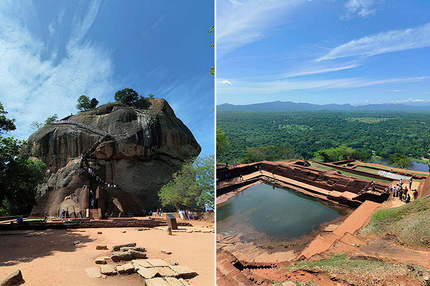
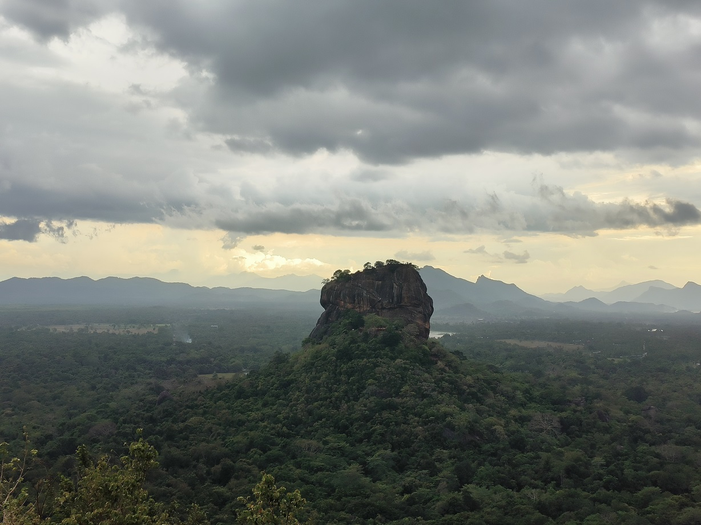
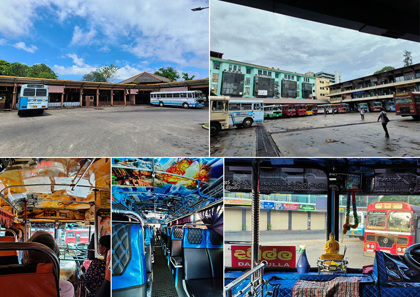

第一次的背包客旅行，我選擇了一個對我來說既陌生又帶點距離感的國家「斯里蘭卡」，一個以錫蘭紅茶聞名的地方。出發前，周圍的人聽到我要以背包客的方式去斯里蘭卡，大都很驚訝或擔心，其實我出發前也是有點緊張，但去完後，真心覺得這是一個很值得親自去看看的國家。
以下，就來分享我眼中的斯里蘭卡。
最美的風景是人
因為想深度體驗，下飛機後我和其中一位朋友沒有包車去飯店，而是轉了三班巴士，才抵達住宿。
機場附近最近的公車站大概要走 15~20 分鐘，而且出發前查資料也不好找。抵達後，我們從出機場一路問了好幾個人才到公車站。公車站看起來很荒涼，且看不出怎麼等車。後來遇到好心的一家三口，爸爸很熱情地跟我們聊天，帶我們坐巴士，下車時還幫我們注意可以轉乘的巴士，有了他的幫助，我們很順利地抵達住宿與其他的朋友會合。
在斯里蘭卡我們大都選擇搭巴士，跟司機說好要去哪，到了他們都會提醒我們要下車，有時車上很擠沒位子坐，還會被讓座，也遇到幫我們喬位子的車掌。
斯里蘭卡最著名的景點之一獅子岩，是個空中宮殿遺跡，可以走上去看，也可以登上對面的 Pidurangala Rock 遠眺，但 Pidurangala Rock 有一段需手腳並用才能登頂的路線，在那裡可以看到斯里蘭卡人互相幫忙，他們也會幫忙觀光客上去。那天還遇到一支青年摔角隊，他們先下山，之後又在下方協助大家一一牽引、安全下來。
 |
| 大名鼎鼎的獅子岩 登頂後的空中宮殿遺址，聽說是皇家浴池 |
 |
| 從 Pidurangala Rock 遠眺的獅子岩 |
最後一天在首都可倫坡逛街時，因為巷子裡人潮擁擠，又有車子要開進來，場面有點混亂。就在那時，一位善良的婆婆拉住了我，幫我擋著來車，等車子通過後，才微笑著告訴我可以安全前進了。
這趟旅程中，每天遇到的人，只要與你對上眼，總會回以燦爛的笑容。這真的好難能可貴，那一刻總在想如果世界可以這麼和平，那該有多好。
多彩又多變的巴士及特別的巴士文化
來斯里蘭卡一定要搭看看當地的巴士，雖然沒冷氣，但其實只要有開窗在車子行進時都很涼爽，而且很便宜，雖然車程會花比較多時間。
巴士的外觀色彩多色且很鮮明，且內裝都不太一樣。他們很重視信仰，幾乎都會放一尊小佛像，有的插香，有的內裝圖案都是佛像。
 |
巴士是先上車後，車掌在車子行進時，會很靈活地穿梭在僅一人通行的通道跟大家收費，基本上都是現金收付，所以可以看到他手上滿滿的錢。
在斯里蘭卡，巴士的路權似乎很大。這裡的巴士都一路狂飆加狂按喇叭，但其他車子都會乖乖讓開。另外，車掌身體核心一定很強，在這種有速度感的巴士上，依然穩穩地站在不關門的門邊。應該說這裡的人運動神經都挺好的，到站要上下車時，司機不一定會完全停下，而是減速，所以就會看到當地人用跳的上下車，而且車掌有時會突然從後門下車，但車子繼續往前開，過沒多久，車掌又會從前面出現，真是讓人匪夷所思。
有時也會突然有人上車兜售商品或上來賣藝獻唱，很新奇。另外一個很特別的地方是，車上即使彼此不認識，大家之間也會自然地互相幫忙。例如有一次看到一位乘客上車後沒有座位，她就直接把手上的物品放在附近一位坐著的乘客腿上，對方也很自然地幫忙拿著，等她下車時再拿回，全程幾乎沒有多說什麼，卻非常默契。我自己也有過類似的經驗，當我站著時，對面坐著的乘客還主動詢問我要不要把包包放在他腿上。這實在是讓人很驚奇。
不一樣的機場
機場的外圍都有軍人荷槍站崗，一開始以為這裡的機場會像吳哥窟那樣相對簡陋、沒有太多商店。但實際上，這裡就是一個相當一般的國際機場，商店和餐廳也都很齊全。比較特別的是登機流程和我們熟悉的不太一樣：需要先排隊進行行李安檢，之後才能到櫃檯報到領取登機證。而在登機前進入候機室時，還需要再通過一次安檢門。另外，候機室內是沒有廁所的，因此建議在進入安檢前先把廁所上好，會比較方便。
還有很多有趣新奇的人事物講不完，這趟背包客旅行收穫滿滿，希望大家有機會也去看看。